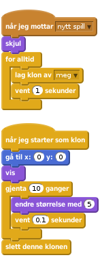
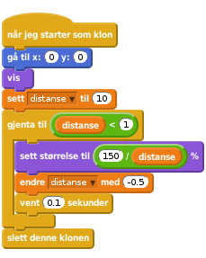
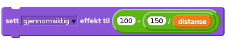
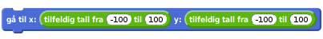
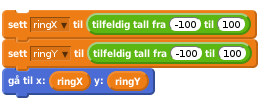
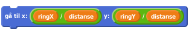
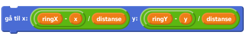

1.5
3D-Flakser
I dette prosjektet skal vi lage en utgave av Flaksefugl (som er en kopi av Flappy Bird) i tre dimensjoner! Spillet går ut på at man styrer en flyvende figur gjennom ringer som kommer mot deg. Spilleren må styre figuren opp og ned og side til side. Hovedutfordringen i dette spillet er å få det til å virke som om ringene faktisk kommer mot flakseren, og så forsvinner forbi. Prosjektet er delt inn i to deler siden det er ganske mye vi skal igjennom. I denne første delen skal vi få ringene til å fungere som de skal. La oss sette i gang!

Spillet skal bestå av tre figurer: Ring, Flakser og Bakken.
Vi begynner med å lage ringefiguren. Du kan enkelt tegne den selv som to sirkler inni hverandre, fylt med en farge imellom.
Tegn figuren Ring. Jo enklere jo bedre.
Gi ringfiguren disse skriptene:

Du må også lage et skript som sørger for at meldingen nytt spill sendes når det grønne flagget klikkes.
De to skriptene vi har foreløpig er en OK start, men de er ikke gode nok til å virkelig kalles 3D! Tenk litt på hvordan det virker som om noe vokser i størrelse når det kommer mot deg. Når det er langt unna så vokser det ganske sakte, mens når det er nærme så vokser det mye fortere. Dette skal vi få til ved hjelp av en variabel som vi kaller distanse. Når distanse er stor, så er ringen langt borte, og skal vokse sakte. Når distanse er liten så betyr det at ringen er nærme, og den skal vokse fort.
Lag en variabel som heter distanse. Pass på at den kun gjelder for denne figuren.
Endre skriptet over til dette:

Det kan hende du må endre litt på tallene i skriptet over for at det skal se bra ut. Prøv deg frem!
Dette er ikke viktig for å kunne fortsette med spillet, men prøv hvis du vil. For at det skal se enda mer ut som at ringene først er langt borte og så nærme, så kan du bruke klossen

for å gjøre ringene mer gjennomsiktig når de er langt borte. Hvilke tall må du putte i denne klossen for at det skal se bra ut?
For at spillet skal bli mest mulig utfordrende så burde ringene dukke opp på forskjellige steder hver gang. Å først få dem til å dukke opp på forskjellige steder er ikke så vanskelig, men det å få dem til å vokse på riktig måte er litt vrient.
Prøv først å endre på blokken som plasserer ring-klonene til

Det ser ganske bra ut, men ikke helt riktig, eller hva? Det er fordi midtpunktet til ringen er på samme sted hele tiden mens ringen er på vei mot deg. For at det skal se ut som at den suser forbi deg så må du hele tiden flytte på ringen mens den er på vei mot deg. For å få det til å fungere må ringklonen huske hvor den dukket opp til å begynne med.
Lag variabler ringX og ringY som kun gjelder for ringfiguren.
Erstatt blokken som først plasserer ringen med dette:

Forhåpentligvis har ikke oppførselen til ringene endret seg ennå. For å få midtpunktet til ringene til å flytte på seg mens ringene kommer mot deg kan du putte følgende blokk et sted inni løkken hvor ringen vokser:

Trykk på det grønne flagget. Nå burde det se ut som om ringene virkelig kommer mot deg! Nå kan du ta et pust i bakken og se over det du har skrevet så langt.
I neste del av dette kurset skal vi få en figur til å fly gjennom ringene. I dette steget skal vi lage den figuren, men ikke kode all flyveoppførselen dens.
Lag en ny figur. Det er best om den er symmetrisk, slik at det kan se ut som om den flyr innover i skjermen uten at det ser teit ut, bruk for eksempel flaggermus-figuren. Kall den Flakse.
Lag to nye variabler, x og y. La dem gjelde for alle figurer.
Gi Flakse følgende skript:
![når jeg mottar [nytt spill v]
for alltid
hvis (tast [pil høyre v] trykket)
endre [x v] med (10)
vent (0.05) sekunder
slutt
hvis (tast [pil venstre v] trykket)
endre [x v] med (-10)
vent (0.05) sekunder
slutt
hvis (tast [pil opp v] trykket)
endre [y v] med (10)
vent (0.05) sekunder
slutt
hvis (tast [pil ned v] trykket)
endre [y v] med (-10)
vent (0.05) sekunder
slutt](8d3baf7229edf5ecf414bf1fb440f9446f6cb7b7.png)
Nå endres x og y når du styrer med piltastene. Vi venter inni hver hvis-test for at x og y ikke plutselig vokser over alle grenser. Se hva som skjer om vi ikke venter om du vil..
Nå vil vi at posisjonen til ringene skal endre seg når vi styrer. Det kan vi få til ved å endre blokken
til dette:

Ser det riktig ut nå? Nå er vi igrunn ferdig med det som trengs for å gå videre med del 2. I del 2 skal vi få det til å virke som om Flakse flakser når vi trykker på mellomromstasten, akkurat som i Flappy Bird og Flaksefugl. Prøv deg på disse utfordringene hvis du har mer tid igjen.
Er det mulig å styre figuren gjennom alle ringene? Husk at spillet skal være akkurat passe vanskelig, og hvertfall ikke umulig. Gå gjennom alle skriptene og endre på verdiene slik at spillet er gøy å spille, og at det ser bra ut. Kanskje du må endre på størrelsen til ringen, hvor mye ringene skal vokse, hvor mye x og y endrer seg når pilene trykkes, hvor lenge vi venter eller noen av de andre verdiene.
Tegn din egen figur! Flaggermusfiguren er kankjse ikke helt perfekt. Prøv å se om du kan finne noen bilder på nettet du kan bruke, eller tegn din helt egen figur (den burde være et fugleliknende dyr). Husk at det ser mye bedre ut om figuren er symmetrisk. Det er lurt å gi figuren to drakter; en med vingene ned og en med vingene opp. Da kan vi senere få Flakse til å flakse!